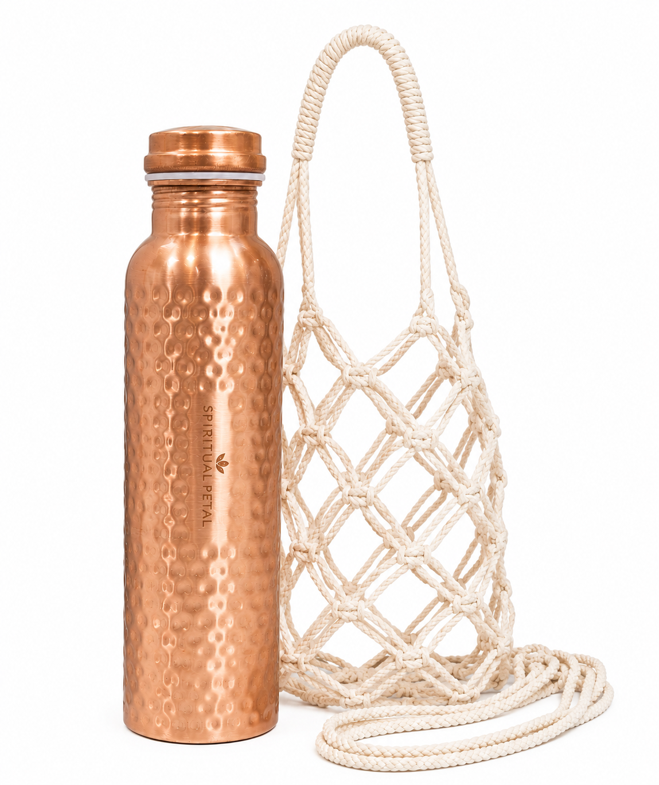
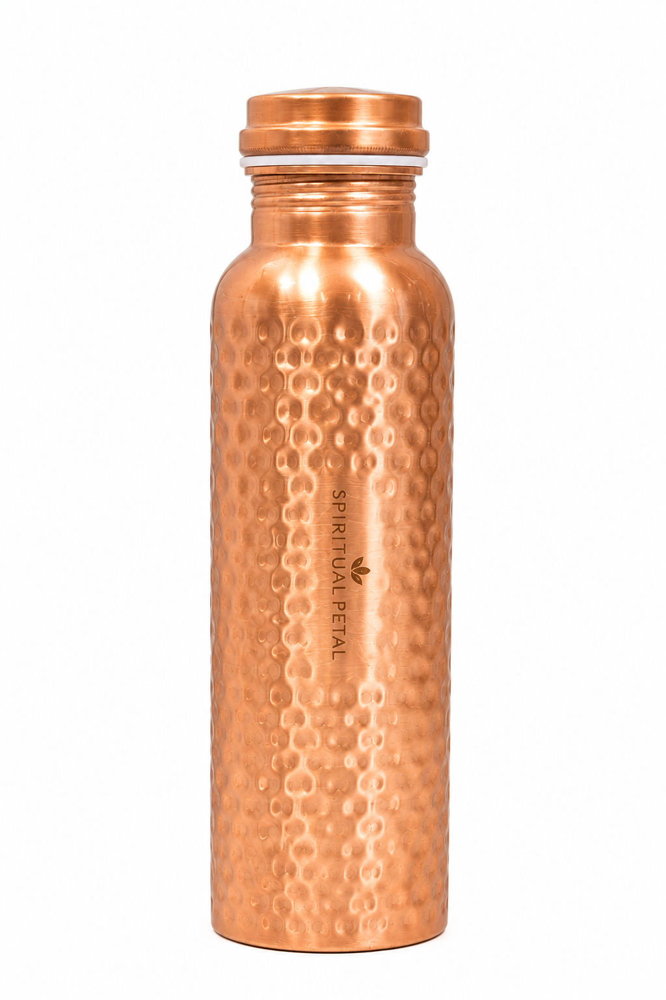
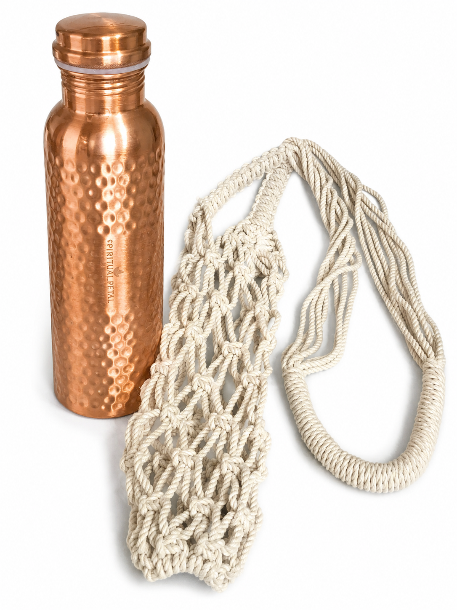

01 · Products from India
Hammered Copper Water Bottle
A traditional-feeling copper vessel with a distinctive hammered surface, fitted copper lid and cream macramé carry bag.
MaterialCopper
FinishHammered texture
LidFitted copper lid
Carry bagCream macramé
How to use
A simple daily routine.
For best care, use the bottle primarily for plain drinking water and follow the cleaning guidance below.
How to use your copper bottle
- Before first use, wash the bottle and lid with a mild dish soap and lukewarm water.
- Fill with clean drinking water and close the lid securely.
- If following a traditional copper-water routine, many people fill the bottle in the evening and drink the water the following morning. Follow your own health professional's advice if you have dietary or medical concerns.
- Pour the water into a glass rather than drinking directly from the bottle if that is more comfortable for you.
- Rinse and dry the bottle regularly rather than leaving water stored indefinitely.
Traditional wellness note: copper vessels have a long history in Indian households and Ayurvedic traditions. This page describes traditional practice and does not claim that copper water treats or prevents disease.
Copper bottle care
- Hand wash only with mild soap and a soft sponge or cloth.
- Rinse thoroughly and dry completely after washing.
- Do not put the bottle in a dishwasher.
- Avoid storing acidic drinks, carbonated drinks, juice, milk or other beverages in the copper bottle unless your product instructions specifically permit them.
- Do not use steel wool, harsh scouring pads or abrasive cleaners on the hammered surface.
- Natural copper develops a patina over time. This is normal and part of copper's character.
For occasional brightening, use a copper-safe cleaner according to its label. If using a traditional lemon-and-salt method, use it sparingly, rinse very thoroughly and dry immediately; it can change the appearance of the finish.
Product details
Texture, portability & character.


SpiritualPetal
A timeless copper vessel for your everyday routine.
Check the current eBay listing for availability, price and shipping.
Shop the bottle on eBay →